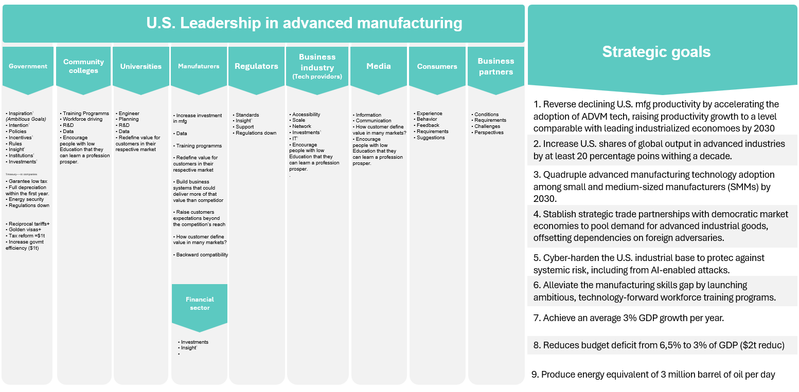
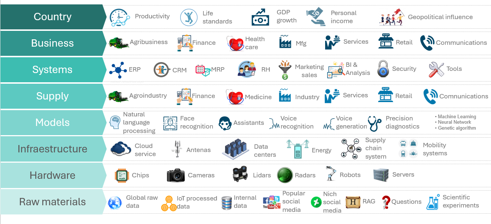
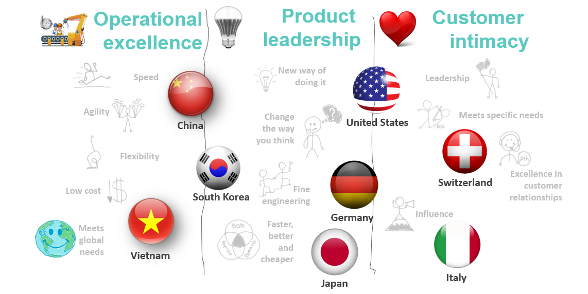

Action Plan for U.S. Leadership in Advanced Manufacturing Summary
In this space, I share some details about research and studies that I have been working on.
This summary is based on Helwig and Goldman (2024) and is intended to help me enhance my writing skills and deepen my understanding of the English language, all while engaging in what I enjoy most: Business Analysis and Process Improvement.
The texts may contain typos, imcomplete thoughts, and will be subject to ongoing revision and develppment. In addition to the primary document used to create this summary, I have also drawn upon the reference documents cited within. I have reviewed this secondary sources and extracted relevant concepts that have contributed to my understanding and learning.
Introduction
Driven by demographic shifts, economic growth in emerging markets, climate change, and disruptive technologies, a core set innovations ranging from AI and intelligent robotics to additive manufacturing and digital twins are converging to revolutionize industrial production.
Integration of machining, networking, sensing, and computation capability.
Design and production of physical goods.
Ability to adopt and improve these paradigms.
Past, Presente and Future
Past
Industrial revolution 1865, Carnegie, bessemer process etc.
Boston Power lithium ion battery technologies
Ford, Packard, WWII, Inovations, Deming
Exit Zero, American Story, Rust Belt - First Impressions, Rust Belt - City’s economic Struggle
Introduction to Lean Six Sigma Methods by MIT Aeronautics Engineering System Division
Present
Chips and Science Act and Research and Development, Competition, and Innovation Ac
Inflation Reduction Act
Invest in America
Workforce Education
Action plan for Manufacturing in US
Ambitious of industrialize, build the factories, Supply chain, and vertically integrate those Supply chains together.
Our Next Energy raised capital of 1B+ to generate 20 GWh for battery.
Future
Consistence and Competitiveness on Manufacturing
Personal Finance
Manufacturing base
Energy Storage
Consistence and Competitiveness on Manufacturing
Goals

What is Advanced Manufacturing
Application of digital technologies to the physical world and inovation in the world of atoms for process innovation, or alterations to the manufacturing process that improve how thigs are built. As a result, scale that was previously impossible, cost reduction, and value-added products in shorter cycles.
Talk about transition from digitalization to industrial AI and advanced data analytics role, and lean principles.
Talk about how to copilot can helps in advance manufaturing
Talk about factory of the future and jobs
Talk about digital twins
Talk about nano tech
Insert some examples of process innovations with pictures and illustrations (bessemer process, planar process, ether loop)
Principles of Advanced Manufacturing
Talk about learning by doing
Talk about data standards
Talk about R&D
Talk about quality, variation, uniformity, deming cycle, shewhart chart etc.
Talk about scale the materials genome initiative page 23
Economic Activities in Emerging Markets on Manufacturing
Talk about project China 2025 and 2030
Talk about South Asia countries
Talk about Central e South America
Value Chain
Redefined value, changing what customers valued and how it was delivered, then boosted the level of valur that customer expected.
Business systems that could deliver more of that value than competitors.
Raised customers’s expectations beyound the competition’s reach. Today’s customers have an expanded concept of value that includes convenience of purchase, after-sale service, dependability, and so on.
How to deliver superior customer value in line with one of the three value disciplines - operational excellence, customer intimacy or product leadership - in a world where populations are getting older Anjos (2024) , more urban, new tehnologies are emerging rapidly, economic activity in emerging markets is expanding rapidly all this without forgetting climate change ?

Business Model and Cultural transformation
- Acording Treacy and Wiersema (1993) to becoming an industry leader requires to choose a value discipline that takes into account its capabilities and culture as well as competitors’s strengths .

Talk about relationship between small manufacturing and advanced manufacturing (pag 24)
Talk about lean manufacturing( pag 25) and Earl Murman(MIT) papers and classes.
Talk about capital access gaps for small medium manufacturing (pag 26)
Talks about supply chain system with Allies and Partners (pag31,35)
Talk about training and talent (pag 36, 37,38, 39) and Earl Murman(MIT) with japanese training stats, Ebbinghaus forgetting curve, Jereme Bruner, Lev Vygotsky, Richard Skemp, Zontan Deans, Jean Piaget, Denis Littly, and Raj Shaunak.
Talk about cognitive bias, principles and examples. from A Neural Network Framework for Cognitive Bias paper at ncbi